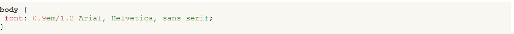
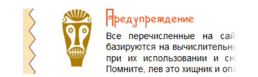
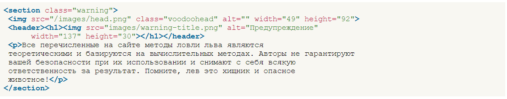
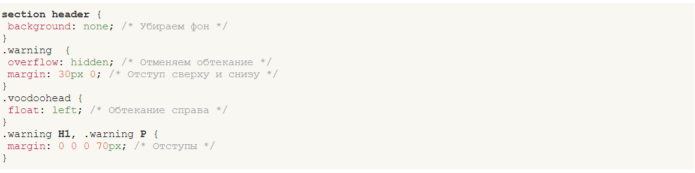
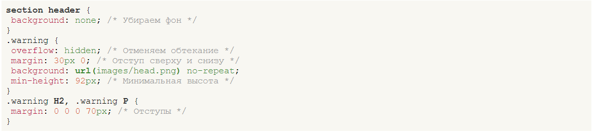
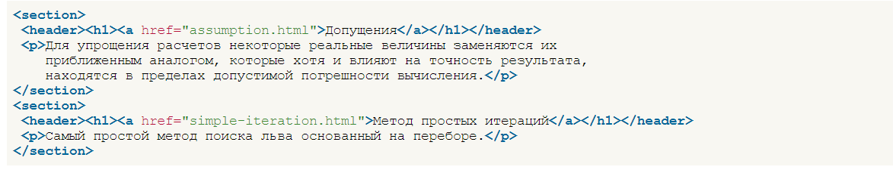
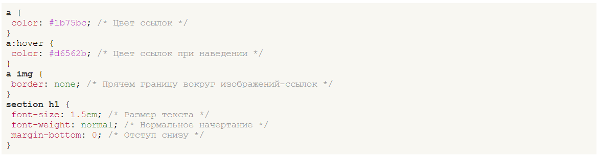
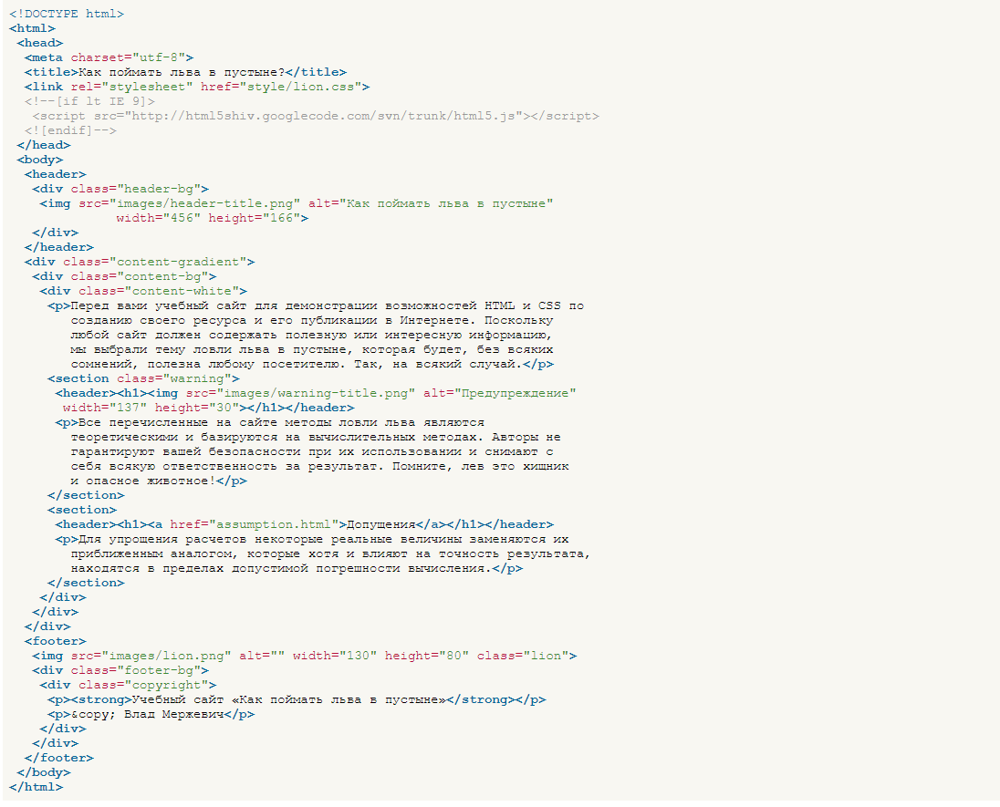
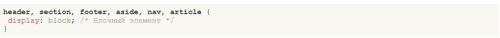

Головною називається веб-сторінка, на якій зазвичай починається перегляд сайту. Вона відкривається при наборі адреси сайту і в певному сенсі є його «обличчям». Саме з головної сторінки починається знайомство відвідувачів із сайтом, тому треба одразу передати тематику сайту та забезпечити швидкий доступ до змісту.
На головній сторінці нашого навчального сайту представлено три блоки - короткий опис сайту, попередження та посилання на сторінки з описом методів. У всіх блоках використовується текст, тому в першу чергу потрібно встановити його стильове оформлення. Гарнітуру шрифту, його розмір та міжрядкову відстань (інтерліньяж) можна задати через універсальну властивість font.
Перше значення 0.9em означає розмір шрифту, друге після слеша інтерліньяж, а після пробілу слідує набір шрифтів, які слід використовувати на сторінці. Якщо перший шрифт Arial, що йде, не буде знайдений в операційній системі, браузер почне шукати шрифт Helvetica. Якщо і він не виявиться, буде обрано будь-який інший рубаний шрифт, або як їх ще називають, без засічок.
Блок с предупреждением
У цьому блоці використовується два зображення: одне для голови, друге для заголовка тексту
Блок із попередженням
Само расположение элементов можно выполнить разными методами, к примеру, установить рисунок с головой как фоновый без повторения и сдвинуть текст вправо, либо сделать обтекание через float. Рассмотрим эти методы подробнее.
Метод 1. Використання обтікання
Для початку нам потрібно створити код, до якого надалі прикладаються стилі. Плаваючі елементи завжди розташовуємо на початку, тому малюнок з головою вставляємо першим, потім вже слідує заголовок і текст.
Блок із попередженням
У стилях зображення голови ставиться властивість float зі значенням left, а тексту заголовка та абзацу усунення лівого краю через margin-left. Для скасування обтікання до warning додається overflow зі значенням hidden.
Фоновая картинка
Код залишиться практично незмінним порівняно з прикладом, тільки зображення голови слід забрати, оскільки воно додається через властивість background.
Також слід додати властивість min-height, щоб при зменшенні висоти блоку фоновий малюнок не обрізався. Значення дорівнює висоті зображення head.png.
Блок із посиланнями
Кожен блок з посиланням та її описом обрамлений тегом <section>, саме посилання розташовується всередині тега <h1>, який в свою чергу знаходиться всередині <header>. Така логіка може здатися дивною - навіщо нам <header>, коли на сторінці він уже є, і до чому стільки тегів <h1>? У HTML5 своя логіка побудови структури документа, яка відрізняється від звичної схеми HTML4. У попередній версії HTML ієрархія блоків будувалася на основі тегів <h1>...<h6>. Відповідно, <h1> ставив заголовок сторінки, <h2> та <h3> підзаголовки. Щоб схема документа будувалась правильно, на сторінці має бути лише один <h1>. Специфікація HTML5 встановлює алгоритм генерації схеми документа, що включає себе нові семантичні теги. Цей алгоритм каже, що теги <article> та <section> створюють новий розділ. А в HTML5 кожен розділ може містити власний тег <h1>.
У стилях встановлюємо колір посилань через властивість color, колір посилань при наведенні на них курсору миші за допомогою псевдокласу :hover та параметри заголовка <h1>.
Тепер збираємо разом усі наші розділи та отримуємо остаточний код головної сторінки сайту
Головна сторінка
Код HTML завершено, але стильовий файл lion.css слід відредагувати з урахуванням нових тегів та вказати, що теги <header>, <section>, <footer>, <aside>, <nav>, <article> є блочними. Це необхідно для коректного застосування до них стилів у старих браузерах.
